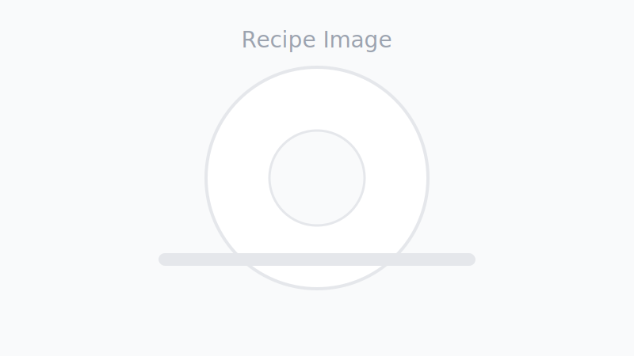

Spaghetti Aglio e Olio
Categories
⏱️
🍳
📦
🎯

Steps
Tip: Emulsification is key—toss pasta with oil and starchy water off the heat to create a silky sauce.
Notes & Variations
- Add anchovies with the garlic for deeper umami.
- Stir in 1 tbsp butter at the end for extra gloss.
- Swap parsley for basil, or add toasted breadcrumbs for crunch.